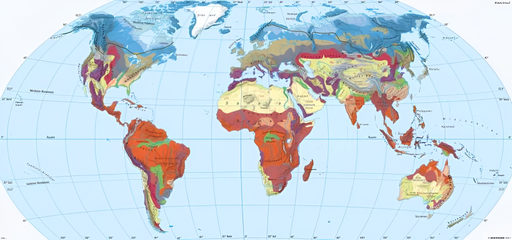
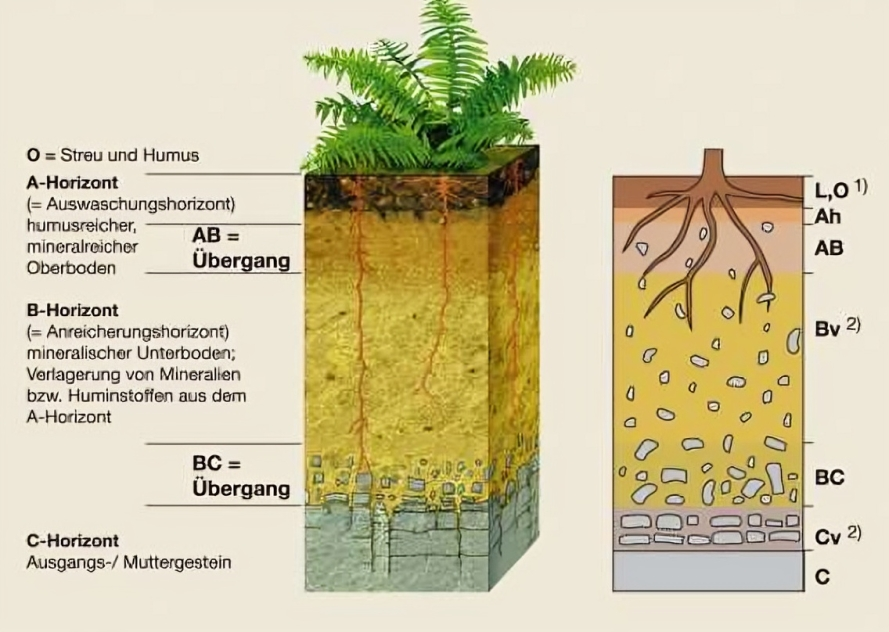
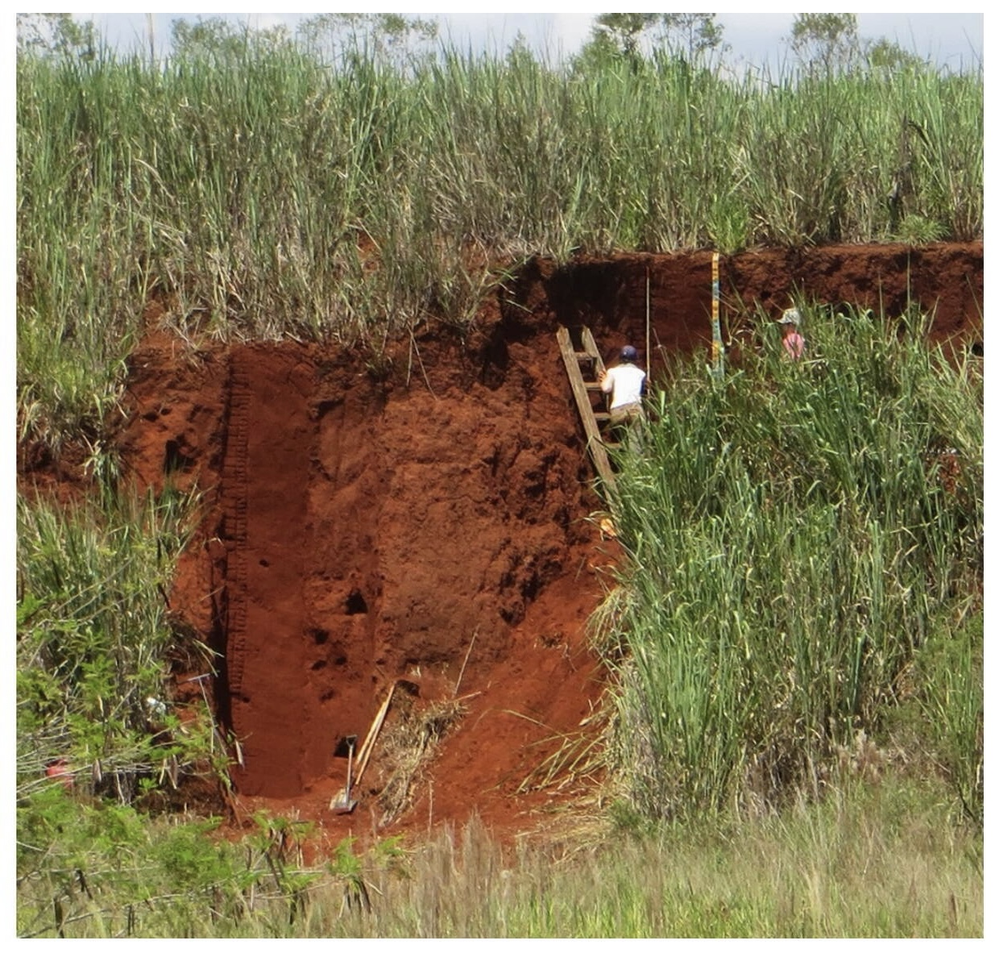
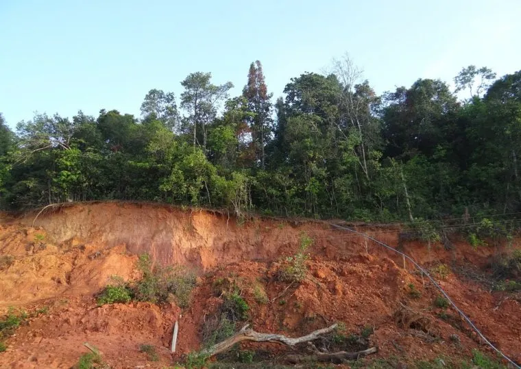

Malte · Oskar · Luc · Chris · Max
Feuchte Tropen und Subtropen
| Region | Vorkommen |
|---|---|
| Südamerika | Amazonasbecken, Cerrado – > 40 % Brasiliens |
| Afrika | Kongobecken, Westafrika, Madagaskar |
| Südostasien | Borneo, Sumatra, Teile Indiens |
| Australien | Nordaustralien (kleinere Vorkommen) |

Drei Faktoren müssen zusammentreffen
Ganzjährig warm (> 20 °C), viel Niederschlag (> 1500 mm/a)
Alte, stabile Kratone (Brasilianischer Schild, Afrikanischer Schild)
Hunderttausende bis Millionen Jahre ohne Unterbrechung
Ferrallitisierung



Dichter Regenwald auf extrem armem Boden?
Slash-and-Burn
Fallbeispiel Cerrado (Brasilien)
Größte Savannenregion Südamerikas
Roterde wirkt fruchtbar (dichter Regenwald) – ist aber extrem nährstoffarm
Klima, Geologie, Vegetation und Boden hängen eng zusammen
Wer den Regenwald rodet, zerstört auch den Boden darunter
Nachhaltiger Umgang mit Ferralsolen ist eine der großen geographischen Herausforderungen unserer Zeit